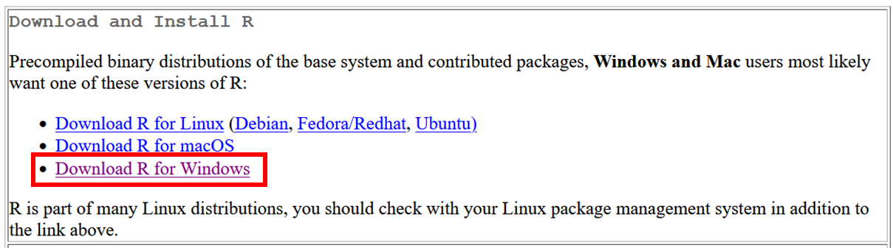
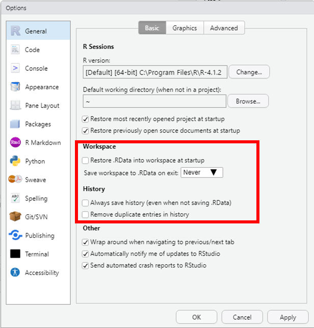

Appendix A — R installations
A.1 Install R
R is a programming language for statistical computing and graphics. It is one of main programming language used for data science (with other programming languages such as Python and Julia).
You can download R from the Comprehensive R Archive Network (CRAN) which is a network of servers around the world that store identical up-to-date versions of code and documentation for R.

Scroll down the page to locate the mirror that is the closest to your geographic location and click on its URL.
Selecting a mirror that is close to you may help speed up the download. You can still use another mirror since the closest geographic location does not always give the best mirror.
For instance, when downloading R from Tanzania, you can select the mirror from South Africa.
Once on the CRAN page, select your operating system: Linux, macOS, or Windows.

Select binaries for base distribution

Download the R installer (< 80 MB)

In your computer’s Downloads folder, double-click the R setup file.

Follow the instruction in the installation wizard to complete the installation.

A.2 Install and setup RStudio Desktop
Rstudio is an integrated development environment (IDE) for R that enables an easier use of R.
RStudio is moving away from its R-exclusive focus and becoming Posit in October 2022 to enable broader data science, scientific research, and technical communication functionalities and, in particular, to integrate Python users.
In order for RStudio desktop to work with R you must have installed R on your computer, see Section A.1. RStudio does not include R when you download and install it.
You can download R from the RStudio website. There are different RStudio products available, but the free Desktop version offers all necessary features for your analyses.


Download the RStudio Desktop installer that corresponds to your operating system.
In your computer’s Downloads folder, double-click the RStudio Desktop setup file.

Follow the instruction in the installation wizard to complete the installation.

Open RStudio
In RStudio, you can set global options by selecting Tools > Global options
Under the General options and the Basic tab:
- Workspace
Uncheck Restore .RData into workspace at startup
Ensure that Never is selected for Save workspace to .RData on exit.
- History
Uncheck Always save history (even when not saving .RData)
Uncheck Remove duplicate entries in history

A.3 Install Quarto
Quarto is a software tool that allows to generate high quality reproducible data analysis documents (including but not limited to articles, reports, presentations) with programming language used in data science (such as R, Python or Julia). It is the successor to R Markdown.
You can download the Quarto installer that corresponds to your operating system from the Quarto website.
1. In your computer’s Downloads folder, double-click the Quarto setup file.
2. Follow the instruction in the installation wizard to complete the installation.

When the installation of Quarto is complete, you will not see any new software on your computer, but Quarto is now available to be used in RStudio, as well as by all other applications on your computer.
Quarto will select a version of R by looking on your system PATH. Note that it is possible to override the version of R used by Quarto by setting the QUARTO_R environment variable.
A.4 Install the rmarkdown R package
To use Quarto with R and RStudio, you need to install the rmarkdown R package.
A R package is a collection of functions, data, and compiled code in a well-defined format, created to add specific functionality to R.
There are 10,000+ user contributed packages and growing.
There is a set of standard (or base) packages which is considered part of the R source code and automatically available as part of your R installation. Base packages contain the basic functions that allow R to work, and enable standard statistical and graphical functions on data sets.
The rmarkdown package will add all necessary functionalities in your R installation to render Quarto documents that use R.
Open RStudio on your computer
In RStudio, you can install a new package by selecting Tools > Install packages…